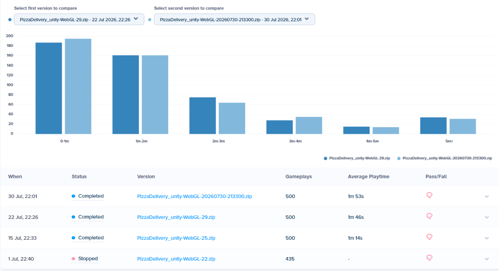

Pizza Delivery
Pizza Delivery is a casual Unity WebGL driving prototype I developed during my internship at Dream Reality Interactive. I designed and built the tutorial and first level, then used Poki playtests to reshape the opening, driving feel, order progression, and moment-to-moment feedback.
Three completed Poki test rounds recorded 500 gameplays each. Visible average playtime rose from 1 minute 14 seconds to 1 minute 46 seconds and then 1 minute 53 seconds. The data shows the versions improving over time, but does not isolate any single change as the cause.

Gameplay screenshot · Driving, active order, countdown, and reward feedback
The Problem
Early playtests showed players leaving before they experienced the full pickup-and-delivery loop. Some missed the WASD and Shift controls, others became stuck on buildings or road obstacles, and the growing stack of tutorials and HUD elements competed for attention. The challenge was to teach the game quickly without slowing down a short browser session.
How the Design Changed
- System foundation: Built the delivery economy around timed rewards, collision damage, repairs, vehicle durability, garage upgrades, and zone unlocks, then integrated the prototype with Poki.
- First playtest response: Players reported difficult steering, too many obstacles, unclear keyboard controls, and an easy-to-miss Shift boost. I prioritized clearer arrows, collider fixes, fewer road blockers, a working pause flow, and a short first delivery with no timer pressure.
- Progression pass: Introduced Normal, Rush, and VIP orders gradually, added zone-specific deliveries and terrain changes, and connected each completed order to cash, vehicle, and area progression.
- Simplification pass: Mentor feedback showed that repeated health information, objective panels, early Garage and Zone UI, and tutorial pop-ups were overwhelming. I removed the landing and Start screens, cut character and pop-up tutorials, and moved essential arrows and key prompts closer to the car.
What Remained Difficult
The final playtest notes still recorded players reaching for the arrow keys and occasionally missing the Shift prompt. Rather than treating the metric improvement as proof that onboarding was solved, I kept control discoverability as an open design issue.
Key Work
- Converted recurring playtest friction into priorities for each WebGL build
- Designed staged Normal, Rush, and VIP order progression
- Connected deliveries to rewards, repairs, vehicles, and zone unlocks
- Simplified onboarding after testing revealed UI and tutorial overload
- Prepared repeatable Poki and itch.io releases with Git-based versioning
Solution
- A short first delivery that teaches driving through an immediate goal
- Order types introduced gradually instead of exposing every system at once
- Vehicle upgrades and locked zones that turn deliveries into longer-term progress
- In-world arrows, nearby key prompts, audio, particles, and camera feedback for important actions
Results
- 3 Poki test rounds
- 500 recorded plays in each completed round
- 1:14, 1:46, and 1:53 visible average playtime across the three rounds
- Implemented, runtime verified, and released as a WebGL prototype

Poki version comparison · Three completed 500-gameplay rounds recorded average playtimes of 1:14, 1:46, and 1:53
My Role
- Game Designer: Defined the core loop, order types, progression, and onboarding
- Unity Prototyper: Extended vehicle control and implemented gameplay, UI, and feedback systems
- Experience Designer: Turned player behaviour into priorities across three test rounds
Learnings
The clearest lesson was that more explanation does not always create more clarity. One iteration added several tutorials and pop-ups; the next removed most of them and brought the essential cues into the play space. Behavioural data helped set priorities, while the written playtest record kept unresolved problems visible instead of turning every release into a success story.
Validation boundary: the documents support the sequence of feedback and design changes, but not causal attribution between any individual change and the playtime increase. Round-by-round retention, completion rate, and the original 44-second baseline dashboard remain unavailable.